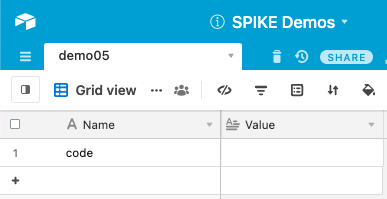
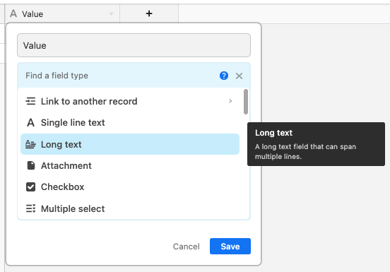
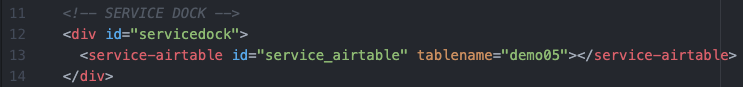
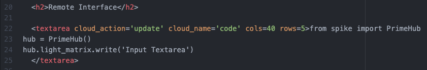
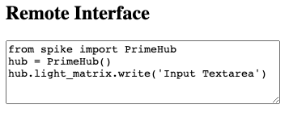
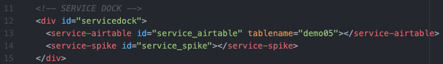
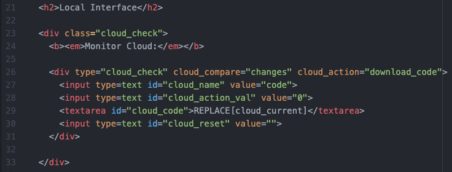
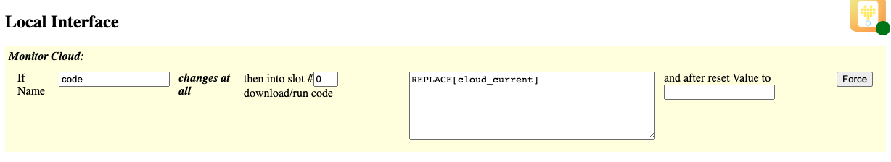

This demo shows how to use a textarea input for user to supply multi-line content.
Be sure to view the overall Documentation for configuring the cloud storage (API key, Base ID, etc) and for more information on how the entire system works.
The "Name" column has an entry "code" that will hold the updated code being sent from the Textarea.
NOTE: the value column is of field type "Long text"
In Airtable, to change the type of a column, use the "Customize field type" option to select "Long text" as the type of the Value. This allows long multiline text that includes "new line characters."

Service Dock
The remote page has the Airtable Service Dock element. Make sure to update the tablename attribute to match your table name.
Remote Interface
This textarea (
<textarea ...>) will update the "code" when it is changed.This is how the text box will look on the Remote Page:

Service Dock
The local page has both the Airtable Service Dock element (make sure to update the tablename attribute to match your table name). There is also a single SPIKE Prime Service Dock element.
Local Interface
The local interface monitors the "code" value for a change, and when it detects a change, sends the entire value (via replacing the REPLACE[cloud_current]) into Slot #0 of the SPIKE Prime. After the code is executed, it resets the "code" value in Airtable to be empty.
This is how this element will look on the Local Page:
